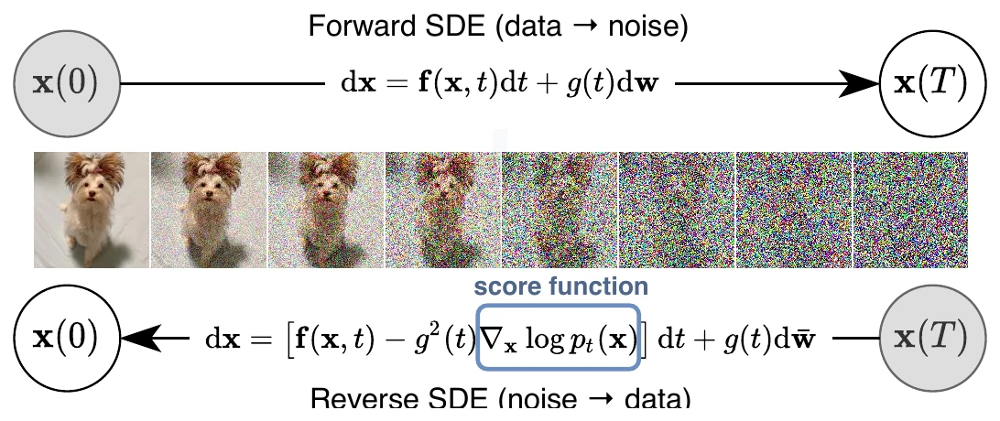
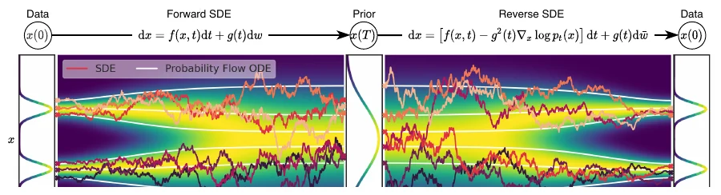
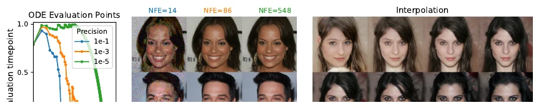

正文精译 + 框架导读；附录体量较大，给出结构与关键结论。公式编号沿用原文；图表按本文顺序重排，图片取自原文并本地化。
Abstract / 摘要
从数据制造噪声很容易；从噪声制造数据，就是生成建模。本文提出一条随机微分方程（SDE），通过缓慢注入噪声，把复杂的数据分布平滑地变换成已知先验；并给出对应的逆向时间 SDE，通过缓慢去噪把先验变回数据。关键在于：逆向 SDE 只依赖扰动数据分布随时间的梯度场，也就是 score。借助 score-based 生成模型的进展，我们可以用神经网络估计这些 score，再用数值 SDE 求解器采样。该框架统一了此前的 score-based 模型与扩散概率模型，带来新的采样方法和建模能力。我们提出 predictor-corrector 框架来修正离散化误差；推导出与 SDE 同分布的 neural ODE，从而支持精确似然计算和更高效的采样；并给出用 score 模型求解逆问题的新方法，在类条件生成、图像修复与上色上展示效果。结合架构改进，我们在 CIFAR-10 无条件生成上取得 Inception score 9.89、FID 2.20，似然 2.99 bits/dim，并首次用 score-based 模型生成 1024×1024 的 CelebA-HQ 图像。
读法：论文标题是 generative modeling，但它的核心产物不是一个图像生成器，而是一个随时间和条件变化的 score 场。生成只是其中一个任务；本文真正打开的是 score-based diffusion 作为通用推断框架的空间。
引言：从离散噪声尺度到连续 SDE #
有两类成功的生成模型，思路都是“先逐步破坏训练数据，再学习逆转这个破坏过程”：
- SMLD（Score Matching with Langevin Dynamics，Song & Ermon，2019）：在多个噪声尺度上估计 score，也就是数据对数密度对数据的梯度，然后用 Langevin 动力学从大到小逐级采样；
- DDPM（Denoising Diffusion Probabilistic Models，Sohl-Dickstein 等，2015；Ho 等，2020）：训练一串概率模型去逆转每一步加噪，利用逆向分布的函数形式让训练可解。
在连续状态空间里，DDPM 的训练目标其实隐式地计算了每个噪声尺度上的 score。因此本文把这两类模型统称为 score-based 生成模型。更准确地说，本文关心的是 score-based diffusion：score 场是模型，生成只是它的一种用法。
它们已经在图像、音频、图和形状生成上被证明有效。但此前的做法都基于有限个离散噪声尺度。本文提出一个统一框架：不再使用有限个噪声分布，而是考虑一族随时间连续演化的分布——由一条不依赖数据、没有可训练参数的 SDE 描述。
具体来说，前向 SDE 把数据点逐渐扩散成随机噪声；逆向这个 SDE，就能把噪声“塑形”回数据。Anderson（1982）的经典结果告诉我们：逆向过程也是一条扩散过程，它的漂移项只需要前向 SDE 的系数和每个时刻边缘分布的 score。于是我们可以：
- 用一个时间相关的神经网络 估计 ；
- 用任意通用 SDE 求解器数值积分逆向 SDE，得到样本；
- 或者积分对应的概率流 ODE，得到确定性采样、精确似然和可逆编码。


本文的主要贡献可以概括为四点：
- 灵活的采样与似然计算：任意通用 SDE 求解器都可以用来采样；此外还有两类特殊方法——(i) 把数值 SDE 求解器与 score-based MCMC（如 Langevin、HMC）结合的 predictor-corrector 采样器；(ii) 基于概率流 ODE 的确定性采样器。后者带来快速自适应采样、潜码操作、唯一可识别编码，以及精确似然。
- 可控生成：给定不完整信息或类别标签，可以构造条件逆向 SDE，而不需要重新训练一个条件模型。同一套无条件 score 模型即可做类条件生成、图像修复、上色等逆问题。
- 统一框架：SMLD 与 DDPM 分别是 VE SDE 与 VP SDE 的离散化；在此框架下还可以设计新的 SDE（如 sub-VP）。
- 新的实验结果：CIFAR-10 上 FID 2.20、IS 9.89；2.99 bits/dim 的似然；以及 1024×1024 CelebA-HQ 的高保真生成。
为什么它是分水岭：从 DDPM 到 score-based diffusion #
DDPM 已经证明扩散可以生成高质量图像；这篇论文的增量不只是“FID 更低”，而是把扩散模型从离散的生成器改造成连续的 score 框架。
如果把这篇论文只读成“更好的图像生成器”，会错过四个结构性变化：
- 离散 → 连续：噪声尺度不再是一组需要手选的超参数，而是一条 SDE。SMLD 与 DDPM 分别成为 VE、VP SDE 的离散化；sub-VP 则是在同一框架里新设计的 SDE。
- 生成 → 条件 / 逆问题：score 是 log density 的梯度，天然可以通过贝叶斯公式加上条件项。同一个无条件模型，换一个似然 ，就能做修复、上色、超分、去模糊、医学重建，而不必为每个任务重新训练生成器。
- 模型与采样器解耦：训练只负责估计 score；采样可以用任意 SDE 求解器、predictor-corrector，或概率流 ODE。速度、确定性、似然、显存可以按任务选择，而不是被 DDPM 的祖先采样锁死。
- 只有样本 → 有密度与编码：概率流 ODE 给出精确似然、可逆编码和潜空间插值。扩散模型不再只是“采样器”，也是一个可分析的连续变换。
因此，这篇论文的标题虽然叫 generative modeling，它真正打开的是 score-based diffusion 作为通用去噪先验与条件采样器的可能性。生成是入口，不是边界。
| 场景 | 给定 | score 如何被使用 |
|---|---|---|
| 无条件生成 | 无 | 从先验出发，积分逆向 SDE / 概率流 ODE |
| 类条件 / 文本条件 | 类别、文本或属性 | 在 score 上加 ，或用 guidance 近似 |
| 修复 / 上色 / 超分 / 去模糊 | 部分像素、退化观测或线性算子 | 条件 score + 前向模型，做 posterior sampling |
| 医学 / 科学重建 | MRI、CT、稀疏观测等 | 把物理前向算子写进似然，复用同一个 score 先验 |
| 密度估计 / 表征 | 数据 | 概率流 ODE 计算 likelihood、潜码与插值 |
| 快速采样 / 蒸馏 | 训练好的 score 模型 | DDIM、ODE solver、consistency / distillation |
表中的后半部分是本文之后的代表性方向，不是原文实验；本文自己展示的是类条件生成、图像修复与上色。
背景：SMLD 与 DDPM #
SMLD：多噪声尺度的 score matching #
令扰动核为
取一串噪声尺度 。 足够小，使 ； 足够大，使 。
SMLD 训练一个噪声条件 score 网络 ，目标是最小化加权的去噪 score matching 损失：
当数据和模型容量足够时，最优解满足
对每个 成立。
采样时，对每个噪声尺度依次跑 步 Langevin MCMC：
其中 是步长， 是标准正态。从 出发，按 逐级退火，最后得到近似 的样本。
DDPM：离散时间的逆向马尔可夫链 #
DDPM 取一串 ，对每个数据点 构造马尔可夫链：
于是闭式边缘为
记扰动数据分布 。逆向马尔可夫链参数化为
并用重加权 ELBO 训练：
训练完成后，从 出发做祖先采样：
这也是一种加权去噪 score matching：最优模型 匹配扰动分布的 score。式 (1) 与式 (3) 的权重 与 ，都正比于对应扰动核 score 范数平方的倒数。
从离散到连续：前向 SDE #
多个离散噪声尺度是 SMLD/DDPM 成功的关键。本文把它推广到无限多个噪声尺度：扰动分布随时间连续演化，由一条 SDE 描述。
我们构造一个以连续时间 为索引的扩散过程 ，使得
这个前向过程是如下 Itô SDE 的解：
其中 是标准 Wiener 过程， 是漂移系数， 是扩散系数。本文主文假设扩散系数是标量且不依赖 ；更一般的矩阵值情形见附录 A。
SDE 的系数不依赖数据，也没有可训练参数。给定前向 SDE，我们可以用数值方法从数据采样到噪声；反过来，只要知道 score，就能构造逆向过程。


逆向 SDE 与 score 估计 #
从 出发，反向运行扩散过程，就能得到 。Anderson（1982）的结果表明，逆向过程也是一条扩散过程：
其中 是时间从 流向 时的标准 Wiener 过程。只要知道每个时刻的边缘 score ，就能写出逆向 SDE 并采样。
如何估计 score #
score 可以用 score matching 训练。用一个时间相关的网络 ，最小化连续形式的去噪 score matching：
其中 是正权重， 在 上均匀采样。数据与容量足够时，最优解满足
对几乎所有 成立。通常取
式 (7) 用的是去噪 score matching；切片 score matching、有限差分 score matching 也同样适用。
对仿射 SDE， 是高斯，可以直接算；对更一般的 SDE，可以解 Kolmogorov 前向方程，或直接模拟 SDE 采样 ，再改用切片 score matching（附录 A）。
三种具体的 SDE：VE、VP 与 sub-VP #
SMLD 和 DDPM 的扰动分别对应两条具体的 SDE。原文式 (8) 与 (10) 给出离散链；取连续极限后，得到下面三条 SDE：
Variance Exploding（VE）SDE：
它对应 SMLD；当 时方差会爆炸。
Variance Preserving（VP）SDE：
它对应 DDPM；当初始分布具有单位方差时，整个过程方差保持为 1。
sub-VP SDE：受 VP 启发，本文提出
在相同 与相同初始分布下，sub-VP 在每个中间时刻的方差都不超过 VP；它在似然上通常表现更好。
| SDE | 漂移 | 扩散 | 来源 / 特点 |
|---|---|---|---|
| VE | SMLD 的连续极限；方差爆炸 | ||
| VP | DDPM 的连续极限；方差保持 | ||
| sub-VP | VP 的改进；似然更好 |
这三种 SDE 的漂移都是仿射的，因此转移核 都是高斯，且均值、方差有闭式。这让式 (7) 的去噪 score matching 特别高效。
数值求解与 predictor-corrector #
训练好 后，把它代入逆向 SDE，用数值方法积分即可采样。通用方法包括 Euler-Maruyama、随机 Runge-Kutta 等。
DDPM 的祖先采样（式 (4)）其实是逆向 VP SDE 的一种特殊离散化。对于新的 SDE，推导祖先采样规则不一定容易；本文提出reverse diffusion sampler：按照与前向 SDE 相同的离散化方式离散逆向 SDE，因此可以直接从离散化前向过程得到采样规则。
Predictor-Corrector #
通用 SDE 求解器只利用了 SDE 的漂移和扩散；但我们还额外知道 score，因此可以在数值积分之后用 score-based MCMC 修正分布。
- Predictor：数值 SDE 求解器先给出下一步的估计；
- Corrector：再用 Langevin MCMC 或 HMC 从当前 中修正这个估计。
这就是 predictor-corrector（PC）采样器。它推广了 SMLD 与 DDPM 的原始采样：SMLD 相当于“恒等 predictor + 退火 Langevin corrector”，DDPM 相当于“祖先采样 predictor + 恒等 corrector”。
表 2 给出 CIFAR-10 上不同采样器的 FID。可以看到：
- reverse diffusion sampler 通常略优于祖先采样；
- 只加 corrector（C2000）在同计算量下表现较差；
- 每个 predictor step 配一个 corrector step（PC1000）计算量翻倍，但稳定提升质量，通常也优于单纯把 predictor 步数翻倍（P2000）。
| 采样器 | VE P1000 | VE PC1000 | VP P1000 | VP PC1000 |
|---|---|---|---|---|
| 祖先采样 | 4.98 | 3.62 | 3.24 | 3.21 |
| reverse diffusion | 4.79 | 3.60 | 3.21 | 3.18 |
| probability flow | 15.41 | 3.51 | 3.59 | 3.06 |
表中只保留 P1000 与 PC1000 两列；C2000、P2000 的完整数值见原文 Table 1。
概率流 ODE #
对每一条扩散过程，都存在一个确定性过程，它的轨迹与 SDE 共享同一组边缘分布 。这个确定性过程满足一个 ODE：
本文称之为概率流 ODE（probability flow ODE）。当 score 用时间相关网络近似时，它就是一个 neural ODE。
精确似然、编码与快速采样 #
- 精确似然：借助 neural ODE 的瞬时变量替换公式，可以计算式 (13) 定义的密度。对任意输入数据，都能得到精确 likelihood；在均匀去量化的 CIFAR-10 上，本文报告 2.99 bits/dim。
- 可逆编码：从数据 积分 ODE 到 ，就得到潜码；反向积分即可解码。与 normalizing flow / neural ODE 类似，可以对潜码做插值、温度缩放等编辑。
- 唯一可识别编码：前向 SDE 没有可训练参数；在数据、容量和优化都足够时，编码由数据分布唯一确定。
- 快速采样：用黑盒 ODE 求解器（如 Dormand-Prince）可以在误差容限下自适应步长；适当放宽容限可以把函数评估次数减少 90% 以上，而不明显损害视觉质量。


可控生成 #
SDE 框架不只采样 ，也能在给定辅助信息 时采样 ，只要知道 。从 出发，解条件逆向 SDE：
只要估计出前向过程梯度 ，就能用同一个无条件 score 模型解一大类逆问题。
- 类条件生成：令 为类别，训练一个时间相关分类器 。因为前向 SDE 可解，可以先用数据 采样 ，构造分类器训练集；再在不同时间步上用交叉熵训练。
- 图像修复（inpainting）：观测是部分像素 ；条件采样就是从一个只保留已知区域的过程中恢复缺失区域。可以用无条件模型完成，见附录 I.2。
- 上色（colorization）：也是一种修复，只是已知维度是耦合的；通过正交线性变换解耦后在变换空间做修复，见附录 I.3。

从可控生成到逆问题：score 作为通用先验 #
论文第 5 节已经从条件 score 出发做了类条件生成、修复与上色；附录 I.4 进一步给出了一般逆问题的策略。把这句话再推一步，就是 score-based diffusion 最重要的外溢。
考虑一般的逆问题：
其中 是观测， 是已知的前向算子， 是噪声。我们真正想要的是后验 ，它的 score 可以分解为：
第一项由无条件 score 模型给出；第二项只依赖前向模型和噪声。对线性高斯观测，
但采样时我们只有 ，没有 。DPS 等后续工作用 Tweedie 估计
把 近似成 ，于是
这就是“用同一个无条件 score 模型解不同逆问题”的核心：换的是似然 / 前向算子，不是扩散模型本身。
- 是掩码矩阵：图像修复；
- 是模糊核或下采样矩阵：去模糊、超分；
- 是傅里叶采样：MRI 重建；
- 是 CT 系统矩阵：稀疏视角 CT；
- 是压缩感知矩阵：稀疏观测恢复。
这类方法把扩散模型从“生成器”变成了“先验”：你仍然只需要一个 score 场，但可以在它上面做贝叶斯推断。代价是后验近似、guidance 强度和计算量都需要仔细调；它不是无条件生成的免费替代品。
实验与结果 #
架构与训练 #
本文在 VE 与 VP SDE 上探索新的架构，沿用 SMLD/DDPM 的离散训练目标；由于 sub-VP 与 VP 相似，直接把 VP 架构迁移到 sub-VP。最优 VE 架构称为 NCSN++，在 CIFAR-10 上用 PC 采样达到 FID 2.45；最优 VP 架构称为 DDPM++，达到 2.78。
切换到连续目标（式 (7)）并加深网络后，得到 NCSN++ cont. 与 DDPM++ cont.，样本质量进一步提升。表 3 报告 CIFAR-10 结果：VE 通常样本质量更好，VP/sub-VP 的似然更好；这说明实际应用中需要针对数据和架构试不同 SDE。
| 模型 | FID ↓ | IS ↑ |
|---|---|---|
| 条件模型 | ||
| BigGAN | 14.73 | 9.22 |
| StyleGAN2-ADA | 2.42 | 10.14 |
| 无条件模型 | ||
| StyleGAN2-ADA | 2.92 | 9.83 |
| NCSN | 25.32 | 8.87 ± 0.12 |
| NCSNv2 | 10.87 | 8.40 ± 0.07 |
| DDPM | 3.17 | 9.46 ± 0.11 |
| DDPM++ | 2.78 | 9.64 |
| DDPM++ cont. (VP) | 2.55 | 9.58 |
| DDPM++ cont. (sub-VP) | 2.61 | 9.56 |
| DDPM++ cont. (deep, VP) | 2.41 | 9.68 |
| DDPM++ cont. (deep, sub-VP) | 2.41 | 9.57 |
| NCSN++ | 2.45 | 9.73 |
| NCSN++ cont. (VE) | 2.38 | 9.83 |
| NCSN++ cont. (deep, VE) | 2.20 | 9.89 |
主要结果 #
- 最好的样本质量模型 NCSN++ cont. (deep, VE) 将 CIFAR-10 无条件生成的 FID 推到 2.20、IS 推到 9.89；甚至优于此前最好的条件生成模型。
- 最好的似然模型 DDPM++ cont. (deep, sub-VP) 在均匀去量化的 CIFAR-10 上达到 2.99 bits/dim。
- 结合所有改进，首次用 score-based 模型生成 1024×1024 CelebA-HQ 高保真样本（附录 H.3）。
- 在 256×256 LSUN 上，PC 采样器在可比计算量下明显优于只用 predictor 的采样器。
影响与后续：score-based diffusion 的分支 #
这篇论文之后，score/SDE 视角逐渐成为扩散模型的基础语言之一。几条主要分支：
- 条件控制：classifier guidance 用分类器梯度构造条件 score；classifier-free guidance 把条件与无条件 score 组合起来，成为文本到图像模型的常用组件。
- 逆问题与科学成像：DPS、ΠGDM 等工作把前向算子与扩散先验结合，用于超分、去模糊、MRI/CT 重建、压缩感知等任务。
- 潜空间扩散：Latent Diffusion 把扩散搬到 VAE 潜空间，使高分辨率生成更便宜；score/SDE 的推导仍然成立，只是数据空间换了。
- 快速采样：DDIM 已经展示了非马尔可夫、少步数采样的可能；本文的概率流 ODE 则把确定性采样与 SDE/ODE 统一起来。之后的 consistency models、solver distillation 继续沿“少步数、确定性、可蒸馏”的方向推进。
- 密度与表征：概率流 ODE 的精确似然、可逆编码和唯一可识别性，让扩散模型也能做密度估计、潜码编辑与插值。
这些工作不一定都直接引用本文的每一个公式，但共享同一个抽象：学一个随时间和条件变化的 score 场，然后用它做推断。 这也是为什么这篇论文对整个仓库重要——它把“扩散模型”从一类图像生成器，扩展成一套可组合的先验与推断工具。
相关工作、结论与局限 #
本文把 SMLD 与 DDPM 放进同一个 SDE 框架：前向 SDE 负责把数据变成噪声；逆向 SDE 只需要 score；score 用去噪 score matching 训练；采样可以用通用 SDE 求解器、predictor-corrector，或概率流 ODE。
与 neural ODE、normalizing flow 的联系让 score 模型第一次拥有精确似然、可逆编码和潜码编辑；与条件 score 的联系让同一个无条件模型可以完成类条件生成、修复、上色等逆问题。
如果只把这篇论文读成“更强的图像生成器”，会错过它的结构性贡献：它把模型、采样器和任务解耦了。模型只学 score；采样器可以换；任务由条件或似然决定。生成、修复、超分、重建、密度估计，都是同一个 score 场上的不同推断。
局限也很明确：
- 采样仍比 GAN 慢；虽然 ODE 求解器和 PC 采样器提升了效率，但高保真采样仍需多次网络评估；
- 采样器与超参数很多（step size、corrector 步数、ODE 容限、SDE 类型），自动选择与调参仍是问题；
- 不同 SDE 在样本质量与似然之间有明显权衡，需要针对领域实验。
附录导读 #
- 附录 A · 更一般的 SDE：允许矩阵值、依赖状态的扩散系数 ；给出一般逆向 SDE、概率流 ODE、条件逆向 SDE，以及切片 score matching 目标。
- 附录 B · VE、VP、sub-VP 的推导：证明 SMLD/DDPM 的离散扰动分别收敛到 VE/VP SDE；给出 sub-VP 的方差上界。
- 附录 C · SDEs in the wild：从实践角度讨论如何选择、离散化和使用这些 SDE。
- 附录 D · 概率流 ODE：推导 ODE；精确似然；固定离散化采样；黑盒 ODE 采样；唯一可识别编码的实验验证。
- 附录 E · reverse diffusion sampling：给出逆向扩散采样的完整算法和与前向离散化的对应关系。
- 附录 F · 给 SMLD 的 DDPM 型祖先采样：说明如何把 DDPM 的采样规则用于 SMLD。
- 附录 G · predictor-corrector：算法伪代码、corrector 步数、SNR 与采样质量的关系。
- 附录 H · 架构与实验设置：NCSN++/DDPM++ 的详细结构、CIFAR-10 消融、1024×1024 CelebA-HQ 结果。
- 附录 I · 可控生成：类条件采样、修复、上色，以及一般逆问题的求解策略。
延伸阅读 #
- 本库译文：去噪扩散概率模型（DDPM）。DDPM 的离散推导与实验。
- 数学篇：DDPM 的数学原理。从变分下界到 score matching 的完整推导。
- 工程篇：DDPM 的工程实现。U-Net、EMA、DDIM 与采样加速。
- SMLD：Generative Modeling by Estimating Gradients of the Data Distribution（Song & Ermon，2019）。
- DDPM：Denoising Diffusion Probabilistic Models（Ho 等，2020）。
- DDIM：Denoising Diffusion Implicit Models（Song 等，2021）。
- DPS / 逆问题：Diffusion Posterior Sampling for General Noisy Inverse Problems（Chung 等，2023）。
- ΠGDM / 逆问题：Pseudoinverse-Guided Diffusion Models for Inverse Problems（Song 等，2023）。
- Classifier-free guidance：Classifier-Free Diffusion Guidance（Ho & Salimans，2022）。
- Latent Diffusion：High-Resolution Image Synthesis with Latent Diffusion Models（Rombach 等，2022）。
- Consistency Models：Consistency Models（Song 等，2023）。
- 官方代码：yang-song/score_sde。